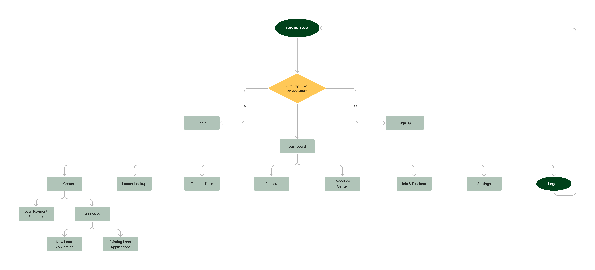
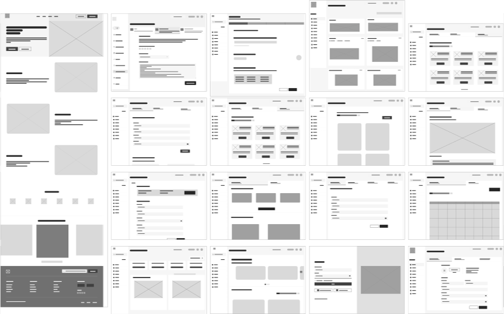

UX Design Process
User Flow
I created a user flow to outline the path from account login/creation to key loan tools to ensure smooth navigation and logical task completion.

Figure 4. User Flow: Outlines steps from account creation to core loan tools for smooth navigation.
Low-Fidelity Wireframes
The team focused on establishing layout, content hierarchy, and basic interaction patterns for both desktop and mobile screens.

Figure 5. Low-Fidelity Wireframes: Shows early layouts and page structures.
Mid-Fidelity Wireframes
These were refined by adding real copy, consistent iconography, and clearer navigation flows to bring more realism and prepare for the transition into high-fidelity design.

Figure 6. Mid-Fidelity Wireframes: Shows improved navigation, copy, and icons.
Style Guide & Branding
My team finalized a cohesive style guide, including logo, color palette, and typography, establishing a trustworthy and approachable visual identity for Fund Flow.

Figure 7. Style Guide: Shows logo, color palette, and typography, establishing Fund Flow’s visual identity.
High-Fidelity Mockups
From these wireframes and style guide, I refined the visual elements, typography, and interactions to create realistic representations of the platform. I then transformed them into a clickable prototype that let users go through the main loan application and tracking steps.

Figure 8. High-Fidelity Mockups: Showcases polished key screens that reflect the final visual style.
Usability Testing & Design Iterations
I tested the prototype with four small business owners. They suggested adding a document upload feature and clearer guidance in the comparison tool. I updated the prototype step by step based on this feedback to make it easier to use.
Figure 9. Interactive Prototype: Demonstrates updated features.